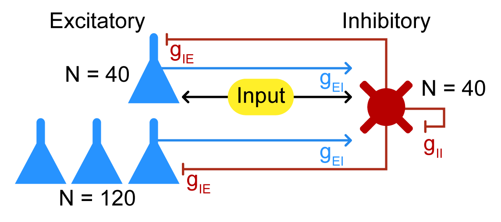

Pyramidal-Interneuron Gamma network
Introduction
This tutorial provides a simple example of how to use the Neuroblox package to simulate a pyramidal-interneuron gamma (PING) network. These networks are generally useful in modeling cortical oscillations and are used in a variety of contexts. This particular example is based on Börgers, Epstein, and Kopell [1] and is a simple example of how to replicate their initial network in Neuroblox.
Conceptual definition
The PING network is a simple model of a cortical network that consists of two populations of neurons: excitatory and inhibitory. We omit the detailed equations of the neurons here, but note they are Hodgkin-Huxley-like equations with a few modifications. Excitatory neurons are reduced Traub-Miles cells [2] and inhibitory neurons are Wang-Buzasaki cells [3]. Both follow Hodgkin-Huxley formalism, i.e., the membrane voltage is governed by the sum of the currents through the sodium, potassium, and leak channels, along with external drive, such that:
\[\begin{equation*} C \frac{dV}{dt} = g_{\text{Na}} m^3 h (V_{\text{Na}} - V) + g_\text{K} n^4 (V_\text{K} - V) + g_\text{L} (V_\text{L} - V) + I_{\text{ext}} \end{equation*}\]
For full details of the model, see Eq. 12-14 on p. 7 of the SI Appendix of Börgers et al. [1]. Here is a visual representation of the network structure and which neurons receive the driving input: 
Model setup
This section sets up the model parameters and the network structure. The network consists of 200 neurons: 40 driven excitatory neurons, 120 other excitatory neurons, and 40 inhibitory neurons. The network is set up as a directed graph with excitatory neurons driving inhibitory neurons and vice versa, with self-inhibition but not self-excitation present.
Import the necessary packages
Reasons for each non-Neuroblox package are given in the comments after each.
using Neuroblox
using OrdinaryDiffEq ## to build the ODE problem and solve it, gain access to multiple solvers from this
using Distributions ## for statistical distributions
using Random ## for random number generation
using CairoMakie ## for plottingInitialization
Set the random seed to reproduce the plots as shown here exactly. If you want to probe how random variability changes the network, simply omit this line.
Random.seed!(42);Setup the hyperparameters for the PING network simulation. The comments note where these parameters are taken from in the Börgers et al. paper [1] or if they were manually tuned for this particular simulation.
μ_E = 0.8 ## mean of the excitatory neurons' external current, manually tuned from the value on p. 8 of the Appendix
σ_E = 0.15 ## standard deviation of the excitatory neurons' external current, given on p. 8 of the Appendix
μ_I = 0.8 ## mean of the inhibitory neurons' external current, given on p. 9 of the Appendix
σ_I = 0.08 ## standard deviation of the inhibitory neurons' external current, given on p. 9 of the Appendix
NE_driven = 40 ## number of driven excitatory neurons, given on p. 8 of the Appendix. Note all receive constant rather than half stochastic drives.
NE_other = 120 ## number of non-driven excitatory neurons, given in the Methods section
NI_driven = 40 ## number of inhibitory neurons (all driven), given in the Methods section
N_total = NE_driven + NE_other + NI_driven ## total number of neurons in the network
N = N_total ## convenience redefinition to improve the readability of the connection weights
g_II = 0.2 ## inhibitory-inhibitory connection weight, given on p. 8 of the Appendix
g_IE = 0.6 ## inhibitory-excitatory connection weight, given on p. 8 of the Appendix
g_EI = 0.8; ## excitatory-inhibitory connection weight, manually tuned from values given on p. 8 of the AppendixFinally, setup the driving currents. All neurons receive a base external current, and the inhibitory and driven excitatory populations receive a second external stimulus current. The undriven excitatory neurons receive a small addition to the base current in lieu of the stochastic current in the original implementation. There is also an external inhibitory bath for the inhibitory neurons - for the importance of this bath see the SI Appendix of Börgers et al. [1].
I_base = Normal(0, 0.1) ## base external current for all neurons
I_driveE = Normal(μ_E, σ_E) ## External current for driven excitatory neurons
I_driveI = Normal(μ_I, σ_I) ## External current for driven inhibitory neurons
I_undriven = Normal(0, 0.4) ## Additional noise current for undriven excitatory neurons. Manually tuned.
I_bath = -0.7; ## External inhibitory bath for inhibitory neurons - value from p. 11 of the SI AppendixCreating a network in Neuroblox
Creating and running a network of neurons in Neuroblox consists of three steps: defining the neurons, defining the graph of connections between the neurons, and simulating the system represented by the graph.
Define the neurons
The neurons from Börgers et al. [1] are implemented in Neuroblox as PINGNeuronExci and PINGNeuronInhib. We can specify their initial current drives and create the neurons as follows:
exci_driven = [PINGNeuronExci(name=Symbol("ED$i"), I_ext=rand(I_driveE) + rand(I_base)) for i in 1:NE_driven] ## In-line loop to create the driven excitatory neurons, named ED1, ED2, etc.
exci_other = [PINGNeuronExci(name=Symbol("EO$i"), I_ext=rand(I_base) + rand(I_undriven)) for i in 1:NE_other] ## In-line loop to create the undriven excitatory neurons, named EO1, EO2, etc.
exci = [exci_driven; exci_other] ## Concatenate the driven and undriven excitatory neurons into a single vector for convenience
inhib = [PINGNeuronInhib(name=Symbol("ID$i"), I_ext=rand(I_driveI) + rand(I_base) + I_bath) for i in 1:NI_driven]; ## In-line loop to create the inhibitory neurons, named ID1, ID2, etc.Define the graph of network connections
This portion illustrates how we go about creating a network of neuronal connections.
g = MetaDiGraph() ## Initialize the graph
# Add the E -> I and I -> E connections
for ne ∈ exci
for ni ∈ inhib
add_edge!(g, ne => ni; weight=g_EI/N)
add_edge!(g, ni => ne; weight=g_IE/N)
end
end
# Add the I -> I connections
for ni1 ∈ inhib
for ni2 ∈ inhib
add_edge!(g, ni1 => ni2; weight=g_II/N);
end
endSimulate the network
Now that we have the neurons and the graph, we can simulate the network. We use the system_from_graph function to create a system of ODEs from the graph and then solve it using the DifferentialEquations.jl package, but for performance scaling reasons we will use the experimental option graphdynamics=true which uses a separate compilation backend called GraphDynamics.jl. The GraphDynamics.jl backend is still experimental, and may not yet support all of the standard Neuroblox features, such as those seen in the Spectral DCM tutorial.
tspan = (0.0, 300.0) ## Time span for the simulation - run for 300ms to match the Börgers et al. [1] Figure 1.
@named sys = system_from_graph(g, graphdynamics=true) ## Use GraphDynamics.jl otherwise this can be a very slow simulation
prob = ODEProblem(sys, [], tspan) ## Create the problem to solve
sol = solve(prob, Tsit5(), saveat=0.1); ## Solve the problem and save at 0.1ms resolution.Plotting the results
Now that we have a whole simulation, let's plot the results and see how they line up with the original figures. We're looking to reproduce the dynamics shown in Figure 1 of Börgers et al. [1]. To create raster plots in Neuroblox for the excitatory and inhibitory populations, it is as simple as:
fig = Figure()
rasterplot(fig[1,1], exci, sol; threshold=20.0, title="Excitatory Neurons")
rasterplot(fig[2,1], inhib, sol; threshold=20.0, title="Inhibitory Neurons")
fig
The upper panel should show the dynamics in Figure 1.C, with a clear population of excitatory neurons firing together from the external driving current, and the other excitatory neurons exhibiting more stochastic bursts. The lower panel should show the dynamics in Figure 1.A, with the inhibitory neurons firing in a more synchronous manner than the excitatory neurons.
Conclusion
And there you have it! A complete PING demonstration that reproduces the dynamics of a published paper in a matter of 30 seconds, give or take. Have fun making your own!
References
- Börgers C, Epstein S, Kopell NJ. Gamma oscillations mediate stimulus competition and attentional selection in a cortical network model. Proc Natl Acad Sci U S A. 2008 Nov 18;105(46):18023-8. DOI: 10.1073/pnas.0809511105.
- Traub, RD, Miles, R. Neuronal Networks of the Hippocampus. Cambridge University Press, Cambridge, UK, 1991.
- Wang, X-J, Buzsáki, G. Gamma oscillation by synaptic inhibition in a hippocampal interneuronal network model. J. Neurosci., 16:6402–6413, 1996.
This page was generated using Literate.jl.